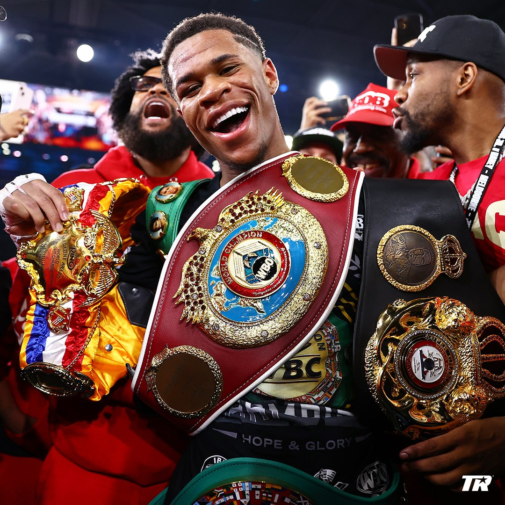

Devin Haney Undisputed Lightweight Champion
Jazz AduheneDevin Haney was crowned as the new undisputed lightweight champion by unanimous decision after the American star outclassed George Kambosos Jr in Australia. Kambosos Jr headed into the bout - which took place in his home nation - with all the belts after his shock victory over Teofimo Lopez last year, but Haney produced a terrific performance to defend his WBC crown and claim the lineal, WBA, IBF and WBO titles from his lightweight rival, who suffered the first defeat of his 21-fight career at Marvel Stadium. After 12 rounds, Haney was crowned as the new lightweight king after the fight was scored 116-112, 116-112 and 118-110 in the 23-year-old's favour. Haney maintains his perfect record and moves to 28-0 as a result of his clinical display.
Devin Haney
Haney opened up an unassailable lead to leave Kambosos Jr with too much to catching up to do in the final third of the fight in front of over 50,000 people at Marvel Stadium. The build-up to the fight was a dramatic one for Haney, who was left sweating on the presence of his father and trainer, Bill, who was initially denied a visa to enter the country. But Bill made the fight after making a last-minute dash to Australia after he was handed a late visa. Speaking after the fight, the new lightweight king said: "This is a dream come true. I was going through it without my dad being here, because I knew this was a big moment for both of us. It would have hurt me to accomplish this without him."